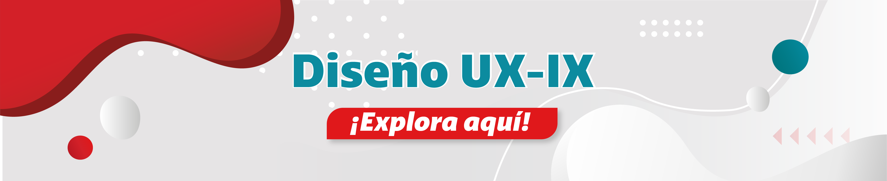

Diseñamos experiencias (UX → se define la necesidad del usuario, los flujos, la estructura y la experiencia) e interfaces (IX → se diseña la interfaz visual y la interacción sobre esa experiencia definida) centradas en el colaborador, asegurando que los contenidos, plataformas y canales internos sean intuitivos, accesibles y fáciles de usar.
Optimizamos la forma en que las personas interactúan con la información, mejorando la comprensión, el uso y la adopción de las herramientas de comunicación interna.
| Tipo de requerimiento | Insumo | Descripción | Primera respuesta | Resolución | Total SLA |
|---|---|---|---|---|---|
| Diseño de comunicaciones cargue y despliegue | Mockup |
|
2 | 118 | 120 |
| Prototipo |
|
2 | 38 | 40 |